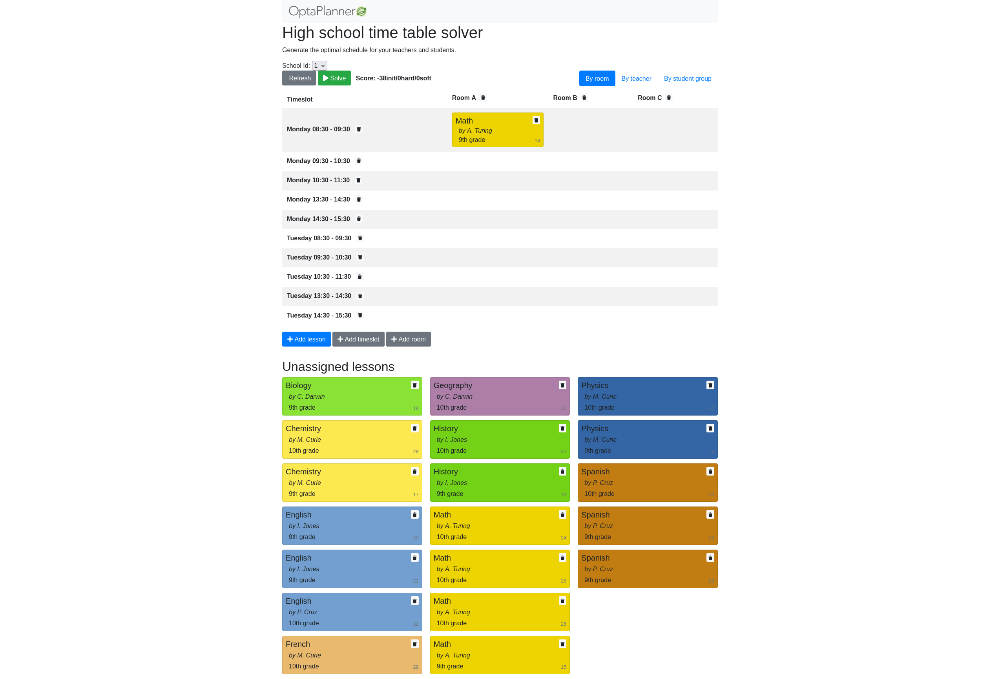

Monitor OptaPlanner solvers through Micrometer

Christopher Chianelli

OptaPlanner developer
It’s 11 PM on Friday evening. Everything was working fine — until now. Suddenly services are failing left and right, and your boss wants to know why. One tool in achieving a diagnosis is to use a monitoring system. Let’s enable monitoring to the OptaPlanner nodes and see if we can diagnose this issue.
What is monitoring?
Monitoring is observing the quality of a service over time. Monitoring is similar to logging, except its output is more easily analyzed by a machine and can be aggregated across multiple nodes. The software being monitored outputs metrics, a numerical measurement of some aspect of the software. The metrics are then recorded in a monitoring system, where they can be graphed, trigger alerts, and be correlated with events.
For instance, you can monitor an OptaPlanner service. You can check how many solvers ran last night, and how many are currently running. If you notice the count is higher than usual, than maybe the failures are caused by CPU starvation since OptaPlanner utilizes most of the CPU. Additionally, you can also check how long each solver ran. If a solver ran abnormally long or short, there might be an anomaly that should be investigated. You might also want to check if the solver threw any errors. Perhaps the issue is caused by bad data being passed to the solver.
Connecting monitoring systems to OptaPlanner
OptaPlanner uses Micrometer to collect its metrics.
Micrometer then sends the metrics to different monitoring systems using registries.
Every monitoring system supported by Micrometer has its own registry.
In Quarkus, to connect OptaPlanner to Prometheus, you would add its extension as a dependency in the pom.xml:
<dependency>
<groupId>io.quarkus</groupId>
<artifactId>quarkus-micrometer-registry-prometheus</artifactId>
</dependency>In Spring Boot, add the Spring Boot actuator to your project along with the registry dependency:
<dependency>
<groupId>org.springframework.boot</groupId>
<artifactId>spring-boot-starter-actuator</artifactId>
</dependency>
<dependency>
<groupId>io.micrometer</groupId>
<artifactId>micrometer-registry-prometheus</artifactId>
</dependency>and enable the metrics endpoint in application.properties:
management.endpoints.web.exposure.include=metrics,prometheusFor information on how to connect Micrometer to other monitoring systems, visit the Micrometer documentation.
Monitoring the Solver
Now that we know what monitoring is and how it can be useful, let’s walk through an actual example. We’ll be running a modified version of the school timetabling quickstart with support for multitenancy. You can find the complete source code, along with scripts for running it on the optaplanner-micrometer-blog GitHub page.
Starting the application
Clone the example code:
git clone https://github.com/Christopher-Chianelli/optaplanner-micrometer-blog
cd optaplanner-micrometer-blogStart the application in development mode:
mvn quarkus:devAfter the application is started, you can access the application at http://localhost:8080. To see available metrics for the application, visit http://localhost:8080/q/metrics.

Starting Prometheus
Prometheus has a prebuilt Docker image on Dockerhub that can be used for running Prometheus. We’ll need to modify its configuration so it’ll scrape our metrics endpoint.
Create the prometheus.yml file with the following text:
scrape_configs:
- job_name: local application
scrape_interval: 1s
metrics_path: /q/metrics
static_configs:
- targets:
- localhost:8080This configures Prometheus to scrape metrics from localhost:8080/q/metrics every second.
Start Prometheus with the preceding configuration:
docker run \
--network host \
--mount type=bind,source=prometheus.yml,destination=/etc/prometheus/prometheus.yml,ro=true,relabel=shared \
prom/prometheusYou can see the Prometheus UI by visiting http://localhost:9090.
Starting Grafana
Grafana provides a much more robust UI with additional features. Grafana has a prebuilt image on Dockerhub that you can use to run Grafana locally. Start it using the following command:
docker run --network host grafana/grafanaIt might take a while to start. After it starts, visit http://localhost:3000 to see the Grafana UI. Log in with the username "admin" and the password "admin".
Connecting Grafana to Prometheus
-
Click the Gear icon to go to the Configuration page.
-
Click the "Add data source" button.
-
Select "Prometheus".
-
Enter "http://localhost:9090" for the URL field.
-
(Optional) Set the Scrape Interval to be equal to the one set for Prometheus (1s).
-
Click "Save & Test".
If it is set up correctly, a green textbox will appear above "Save & Test" with text "Data source is working".

Create a dashboard to monitor metrics
With all that setup, we can finally graph some metrics.
-
Click the "+" icon on the left sidebar.
-
Click "Add an empty panel".
-
Beneath "A", in the text box to the right of "Metrics", enter "optaplanner_solver_solve_duration_seconds_active_count". This adds a graph for the number of active solvers. It might say "No data" if no solvers were started yet.
-
Click the clock icon in the top right, and select "Last 15 minutes" under "Relative time range". This makes the dashboard show data that occurred during the past 15 minutes.
Go to "http://localhost:8080" and start some solvers. Use the "School Id" selector to change schools, and click the "Solve" button to start solving the current school timetable.
The dashboard should display a graph similar to this one depending on how many solvers were started:
Metrics available
Beside "optaplanner_solver_solve_duration_seconds_active_count", there are several other metrics available by default:
-
optaplanner_solver_errors_total: the total number of errors that occurred while solving since the start of the measuring.
-
optaplanner_solver_solve_duration_seconds_max: run time of the longest-running currently active solver.
-
optaplanner_solver_solve_duration_seconds_duration_sum: the sum of each active solver’s solve duration. For example, if there are two active solvers, one running for three minutes and the other for one minute, the total solve time is four minutes.
In 8.12.0.Final and above, additional metrics can be configured by adding a <monitoring> section to the solver config:
<?xml version="1.0" encoding="UTF-8"?>
<solver xmlns="https://www.optaplanner.org/xsd/solver" xmlns:xsi="http://www.w3.org/2001/XMLSchema-instance"
xsi:schemaLocation="https://www.optaplanner.org/xsd/solver https://www.optaplanner.org/xsd/solver/solver.xsd">
<monitoring>
<metric>BEST_SCORE</metric>
<metric>CONSTRAINT_MATCH_TOTAL_BEST_SCORE</metric>
<!-- ... -->
</monitoring>
</solver>For more infomation about OptaPlanner monitoring support, see the Monitoring section of the OptaPlanner documentation.
What next?
This tutorial covers the basics of what you can do with Grafana. Additional things you can do:
Conclusion
Monitoring systems are a helpful tool for diagnosing and alerting us to issues. OptaPlanner integrates with monitoring systems using Micrometer, providing useful metrics such as active solver count. One example of a monitoring system is Prometheus, which scrape metrics from an endpoint. Grafana is an analytics visualization platform that allows us to visualize data and create alerts when certain conditions are met. As always, the complete source code for this example is available on GitHub.
 News feed
News feed


Comments
Visit our forum to comment